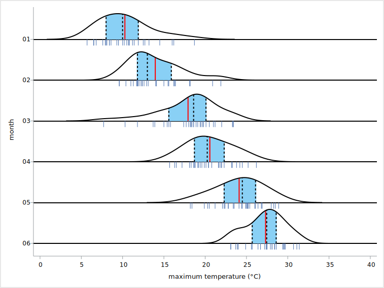

Ridgeline plot
What’s this?
Macro for generate ridgeline plot using SAS GRAPH.
Ridgeline plot shows the distribution of response variable each groups. the distribution is estimated by KDE (Kernel Density Estimation) using proc kde.
rugplot and several discriptive statistics (mean, q1, q2, q3, iqr) can be overlaid on the ridgeline plot.
Input data
key |
variable |
type |
1 |
category |
numeric or string |
2 |
group |
numeric or string |
response |
numeric |
group variable is optional.
I recommended that the variable type of category and group are set to numeric with format. if the variable type is string, item order is defined as acending character order.
Syntax
before use this macro, macro file described below is loaded by %include statement.
Ridgeline.sas
ods graphics / < graphics option > ; ods listing gpath=< output path >; %ridgeline( data=, x=, y=, group=None, xlabel=x, ylabel=y, yticks=, cat_iv=1.2, gridsize=401, bw_method=sjpi, bw_adjust = 1, legend=False, fill_density=True, stat=None, rug=False, ruglength=1, meancolor=red, qcolor=white, iqrcolor=cx89D0F5, palette=sns);
Parameters
data : dataset name (required)
input data. keep, rename and where options are available.
x : variable name (required)
category variable
y : variable name (required)
response variable
group : variable name (optional)
group variable for grouping data at each category.
when the parameter is not set, all of graph object is set same color.
when the parameter is set category variable, the graph object of rach category is set different color.
default is “None”.
xlabel : string (optional)
label string of category axis. default is “x”. when the label is not displayed , set like below.
xlabel=,
ylabel : string (optional)
optional. label string of response axis. default is “y”. when the label is not displayed , set like below.
ylabel=,
yticks : numeric list (required)
tickvalue list of response axis. the list is set as the numeric list separated by space . the item of the list should be set ascending order.
ex. yticks = 10 20 30 40,
cat_iv : numeric (optional)
the interval of category. the default is 1.2. when this parameter is set below 1, each density may be overlapped.
gridsize : integer (optional)
the number of KDE gridsize. default is 401 (the default of proc kde)
bw_method : keyword (optional)
the bandwidth estimation method of KDE. default is “sjpi” (the default of proc kde).
method keyword described below is available.
sjpi (Sheather-Jones plug-in)
snr (simple normal reference)
snrq (simple normal reference that uses the interquartile range)
srot (Silverman’s rule of thumb)
os (oversmoothed)
bw_adjust : numeric (optional)
the bandwidth multiplier. Increasing will make the curve smoother. the default is 1.
legend : bool (optional)
if “True” the legend of group item is displayed. if group parameter is “None”, the parameter will be ignored. default is “False”.
fill_density : bool (optional)
if “True” the fill of the area under the density curve is displayed. default is “True”.
stat : keyword (optional)
display descriptive statistics. select the keyword described below.
mean
q1
q2
q3
iqr
None (any statistics is not displayed)
when this parameter is set several keywords, each keyword shoud be separated by space.
ex. stat = mean iqr,
the default is “mean”.
rug : bool (optional)
if “True” the rugplot is displayed. the default is “False”
ruglength : numeric (optional)
the scale facter of the rugplot.when rug parameter is set “False”, this parameter will be ignored. the default is 1. if set larger value, the rugplot is prolonged.
meancolor : color keyword (optional)
the color of mean. when stat parameter is not set “mean”, this parameter will be ignored. color can be set as color name (ex. red blue) or RGB code (ex.cxffffff). default is “red”.
qcolor : color keyword (optional)
the color of quartile(q1 ,q2, and q3). when stat parameter is not set quartile keyword, this parameter will be ignored. color can be set as color name (ex. red blue) or RGB code (ex.cxffffff). default is “white”.
iqrcolor : color keyword (optional)
the color of IQR. when stat parameter is not set “iqr”, this parameter will be ignored. color can be set as color name (ex. red blue) or RGB code (ex.cxffffff). default is “cx89D0F5”.
pallete : keyword (optional)
color palette for fill, line and markers. the palletes described below is available. see color palette section of introduction page. defalut is “SNS” (Seaborn defalut palette).
SAS
SNS (Seaborn)
STATA
TABLEAU
example
simple ridgeline plot
datasets (ds1)
variable |
detail |
cat |
string, A to J |
response |
numeric |
code
ods graphics /reset=all height=15cm width=25cm imagename="ridgeline1" imagefmt=svg;
ods listing gpath="/home/user/sasuser.v94/image" style=sns_default ;
%ridgeline(
data=ds1,
x=cat,
y=response,
group=cat,
xlabel=,
ylabel=response,
yticks=60 65 70 75 80,
cat_iv=0.7,
bw_method=srot,
stat=None);
output

grouped ridgeline plot
datasets (ds2)
variable |
detail |
month |
numeric width format |
max_temp |
numeric, maximum temperature |
region |
numeric with format, 1=Tokyo, 2=Naha |
code
ods graphics /reset=all height=15cm width=25cm imagename="ridgeline_grouped" imagefmt=svg;
ods listing gpath="/home/user/sasuser.v94/image" style=sns_default ;
%ridgeline(
data=ds2(where=(month in(1:6))),
x=month,
y=max_temp,
group=region,
xlabel=month,
ylabel=maximum temperature (°C),
yticks=0 5 10 15 20 25 30 35 40,
cat_iv=1.2,
legend=true,
stat=None
);
output

ridgeline plot with rugplot and statistics
code
ods graphics /reset=all height=15cm width=25cm imagename="ridgeline_stat_rug" imagefmt=svg;
ods listing gpath="/home/user/sasuser.v94/image" style=sns_default ;
%ridgeline(
data=ds2(where=(region=1 and month in(1:6))),
x=month,
y=max_temp,
xlabel=month,
ylabel=maximum temperature (°C),
yticks=0 5 10 15 20 25 30 35 40,
cat_iv=1.2,
fill_density=False,
stat=mean q1 q2 q3 iqr,
rug=True,
ruglength=3,
meancolor=red,
qcolor=black
);
output
